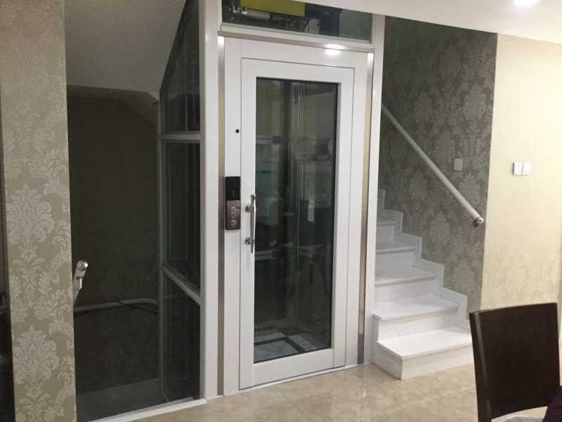
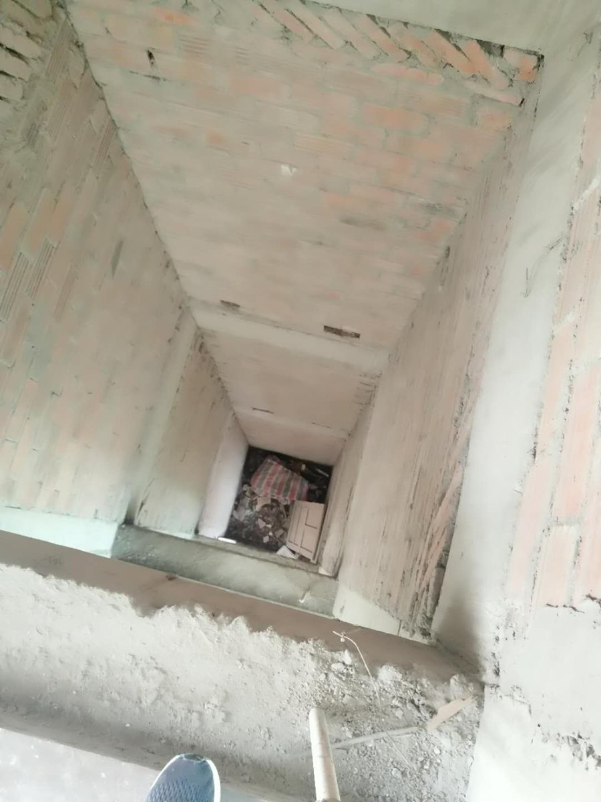
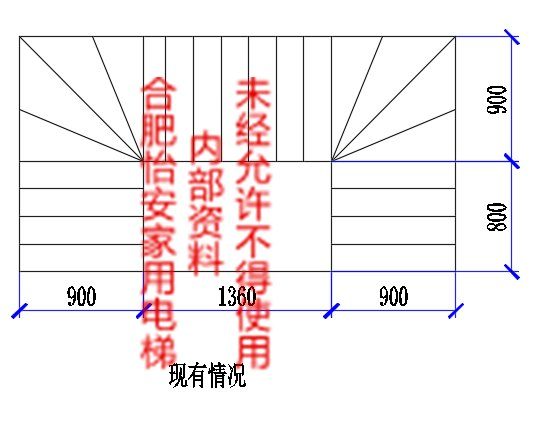
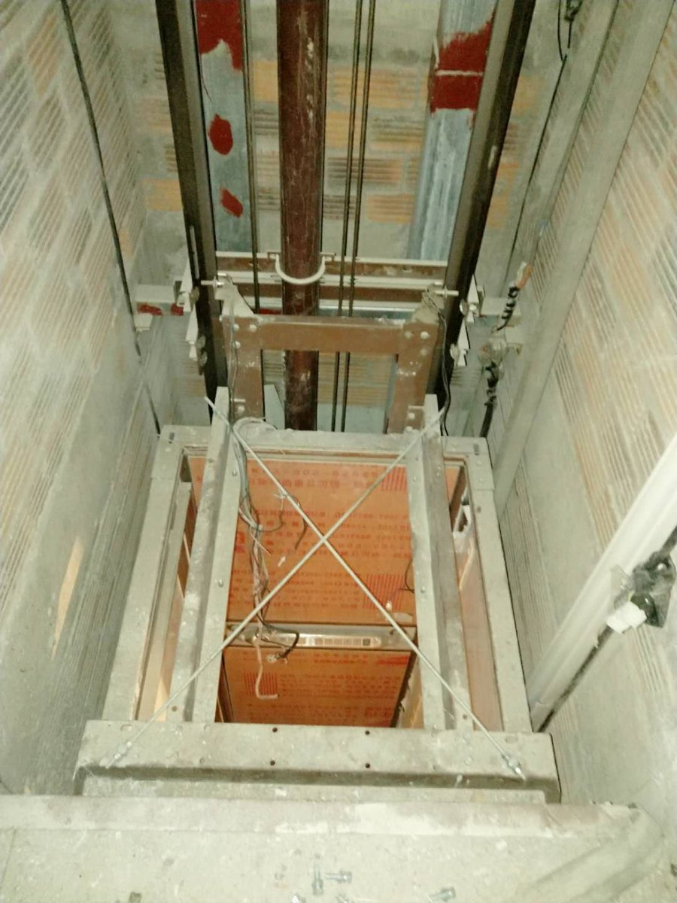

 别墅电梯方案提升别墅价值，兼顾舒适与品质适合房屋：联排、独栋、叠墅、改善型住宅常见问题：装修风格匹配老人儿童使用运行舒适与静音方案重点：先看井道条件兼顾安全和美观与装修和施工节奏配合了解详情 →
 自建房电梯方案先判断房屋结构，再规划安装路径适合房屋：农村自建房、城郊自建房、已建房改造常见问题：井道怎么预留底坑和顶层高度施工协调和后期维护方案重点：现场测量结构条件判断减少返工和后期风险了解详情 →
 小空间电梯方案空间紧张时，更要先做井道尺寸判断适合房屋：小井道、紧凑型别墅、楼梯旁预留空间常见问题：1500×1500能不能装轿厢和井道怎么匹配开门方式受限方案重点：区分土建尺寸和净尺寸核对底坑和顶层必要时采用非标电梯方案了解详情 →
 楼梯中间加装方案不大改结构，先判断洞口和通行条件适合房屋：楼梯中空、跃层、别墅改造常见问题：洞口尺寸不确定通行空间受影响采光和结构固定方案重点：看洞口宽深看开门和平台看结构固定和安全边界了解详情 →